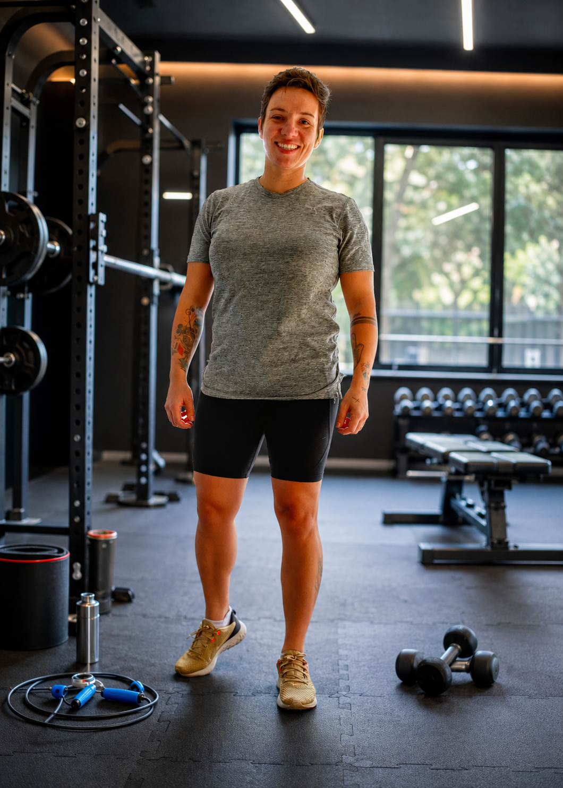
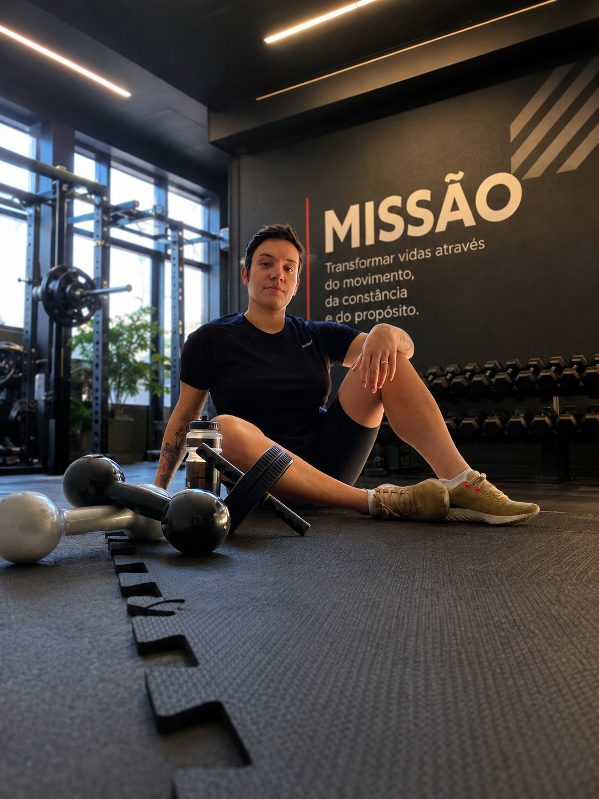

Sem culpa
Não acredito em culpa, cobranças exageradas ou rotinas perfeitas.

UMA HISTÓRIA EM MOVIMENTO
Sou formada em Educação Física, especialista em Emagrecimento e Metabolismo e atuo como Personal Trainer há mais de 18 anos.
Durante todo esse tempo, acompanhei pessoas com diferentes histórias, objetivos e rotinas. E aprendi que ensinar um exercício nem sempre é a parte mais difícil.
O verdadeiro desafio é encontrar uma forma de se movimentar que caiba na vida real e possa ser mantida mesmo nos dias mais corridos.
MOVIMENTO COM PROPÓSITO
Ao longo da minha carreira, estudei diferentes áreas do treinamento, da saúde e do comportamento humano. Também trabalhei por vários anos na área de saúde mental, uma experiência que ampliou muito o meu olhar e reforçou algo em que acredito até hoje: cuidar do corpo também é uma forma de cuidar da mente.
O exercício fortalece o corpo, melhora o condicionamento e contribui para a conquista de objetivos físicos. Também traz mais disposição para o dia a dia, alivia o estresse, melhora o sono e ajuda a preservar a autonomia ao longo da vida.
Por isso, meu trabalho não se resume a montar treinos. Quero ajudar cada pessoa a construir uma relação mais leve, saudável e duradoura com o movimento, sem precisar reorganizar toda a vida para conseguir se cuidar.
Não acredito em culpa, cobranças exageradas ou rotinas perfeitas. Acredito em um acompanhamento que respeite o momento, as necessidades e as possibilidades de cada um.
Mais do que fazer tudo perfeitamente, o que importa é encontrar uma forma possível de continuar. E é isso que quero construir junto com cada um dos meus alunos.

MEU JEITO DE TRABALHAR
Não acredito em culpa, cobranças exageradas ou rotinas perfeitas.
Acredito em um acompanhamento que respeite o momento, as necessidades e as possibilidades de cada um.
Mais do que fazer tudo perfeitamente, o que importa é encontrar uma forma possível de continuar.